オモトのタネをプランターに蒔きました。
2025/03/22
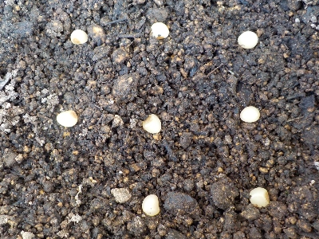
タネを8粒蒔きました。
プランターで土の量が多いので、多分水やりの回数が少なくて済むんじゃないかと思ってます。
2025/03/22

タネを8粒蒔きました。
プランターで土の量が多いので、多分水やりの回数が少なくて済むんじゃないかと思ってます。
2025/01/26
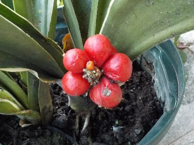
オモトが熟れすぎになりました。表面の張りがなくなりブヨブヨです。そして、しわが入るようになりました。
このタネを採取して、また種蒔きしようかと思っています。
前回種蒔きして増やしたものがありますが、小さい鉢でも葉っぱがグングン伸びていい感じに育っています。
数を増やして並べて置きたいと思っています。
2024/12/07
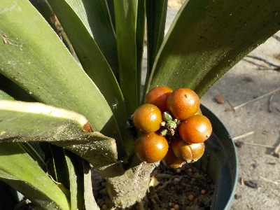
12月ですがまだ朱色です。年末くらいに赤くなるかな？
もうちょっと寒くなったら屋根の下に移動したほうがいいかな。
2024/04/28
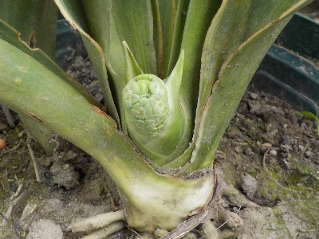
今年鉢に植え替えしたオモトにつぼみができそうです。
玄関とか目立つところに置こうと思ってます。
2024/02/17
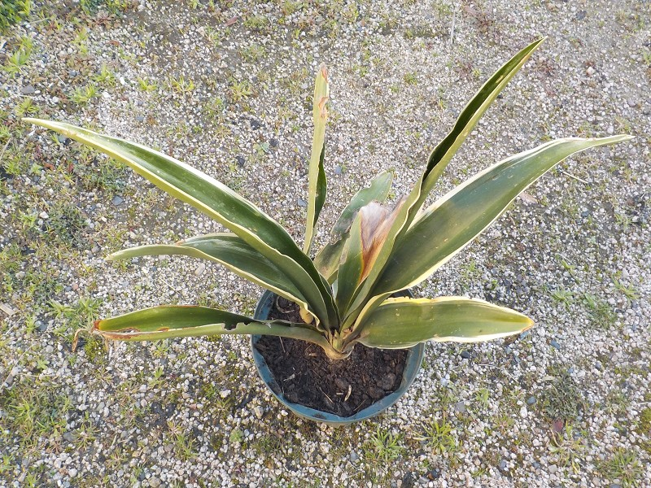
庭に植わってたオモトですが、日当たりが良すぎて葉っぱが傷んでいたので、植替えしました。
株が増えていたので、鉢植えも作りました。庭にあるより鉢植えの方が、なんか見栄えがいいと思いました。
2023/05/05
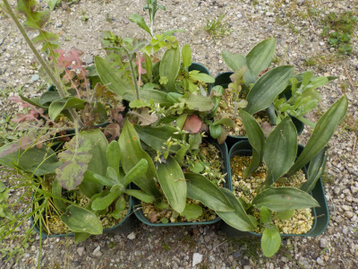
長い間ほっといていたオモトを、やっと植替えすることにしました。草だらけになってます。
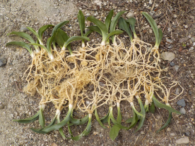
掘り出したオモトです。柔らかくてふにゃふにゃの根っこが、なんだか得体の知れないものな感じがしました。
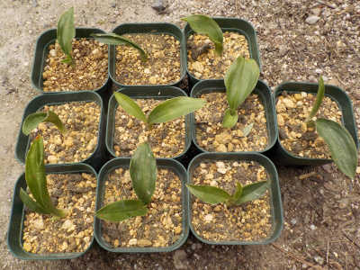
葉っぱが多いの、少ないの、幅広なもの、細いもの等、個性的なものを10本を植替えしました。
余ったものの一部は、家の裏に地植えしました。
2022/08/07
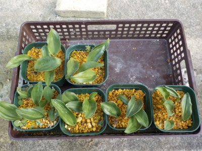
葉っぱが大きくなって窮屈になりました。根っこも絡まっているかもしれません。
植え替えした方がいいです。
30本くらいあるけど何本育てよう？30本は多過ぎるし、10本は少ない。
この実生は人口受粉させたわけではなのいので、全部同じような個体になると思うと10本でもいい気がする。
もうちょっと葉っぱが大きくなって、個性みたいものが分かるまで放置しようかな。
2022/07/10
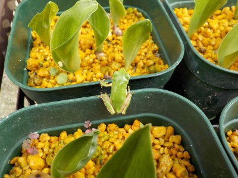
オモトは明るい日陰で水をたっぷり与えているので、カエルが住みやすそうです。
葉っぱがもうちょっと大きくなったら植え替えする予定です。
2022/06/18
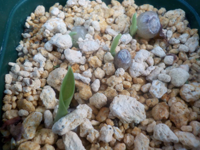
カラーみたいな丸まった葉っぱがでました。
タネまきしてからだいぶ時間が経ちましたが、芽が出て良かったです。
2022/06/03
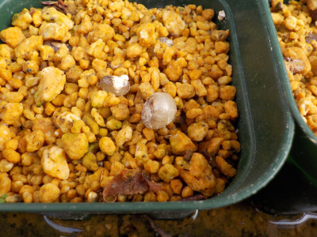
比重が軽くて浮いたのか、根っこが出て押されて浮いたのかわかりません。
3月に種を蒔いてから全然変化がないので、そろそろ芽が出て欲しいです。
2022/05/05
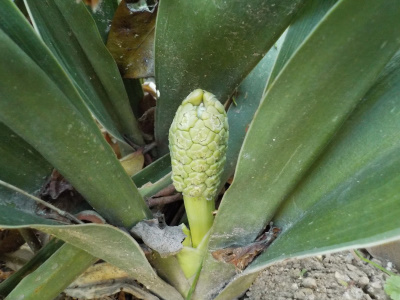
毎年出来てはいましたが、いままで気にしていませんでした。
タネから育ててみようって思ってからアレコレ見るようになりました。
色々やってみると楽しみが増えますね。
2022/03/27
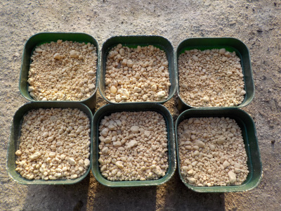
1つの鉢に4から5個たねを蒔きました。
どれくらい発芽するでしょうね？
2022/03/23
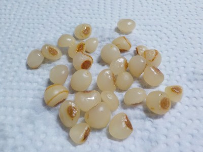
オモトのタネって白いんですね。なんか小さい歯みたい。
出てくる葉っぱも白いのかな？
2021/12/19
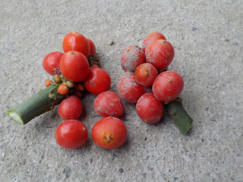
実をそのままにしておくと鳥が食べるってNet記事をみつけたので収獲しました。
春になったら蒔こうと思います。
この実の中に種は何個入っているのかな。
2021/11/28
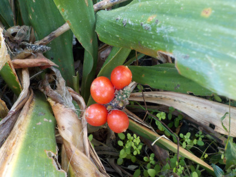
地植えのオモトに実が出来ました。
この実を蒔いて育てようかと思っています。
ミカンの木の下で育っています。